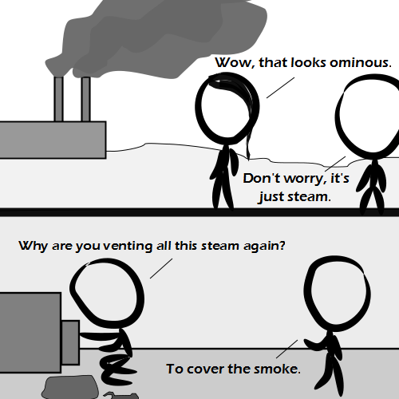

Comic JK 919
When I Feel Like It
⇤
<
?
>
⇥

⇤
<
?
>
⇥
Forum
.
RSS
.
Digg
.
Facebook
.
Reddit
.
Twitter
.
Stumbleupon
Enter your thoughts on number 919 here. Please, no spamming, trolling, lobbying, or masking emissions with other emissions. >Sorry. I farted while I burped. >>They'll do it. >>Which was masking which? This is so real! It's like car exhaust in the winter. >Does anybody have a baby? What is with the baby clothes with cars, with the plume of smoke coming out the carhole? >>Why would someone put baby clothes on cars? >>>I am picturing a car wearing a diaper. Perhaps it masks emissions? >> I've got a man and a woman and a pile of money stickers on my car. >>>though putting a sticker saying "my other car is a Porsche" in the rear window of a 911 Carrera is a bit... silly... >>>>I've always wanted to get a Porsche and put a sticker in the widow saying "my other car is an Austin Montego 1300"... >>>>>well, at least you didn't say an Austin Allegro... Your anus farts often to mask her horrendous vaginal odor. > Wow. Just wow. >> You're new here, aren't you? >>> I've been here since before the comic even started. >Never stop your anus-guy. You've got me coming to the site expecting a joke about her as much as a comic itself. >> Tell **** to the cr**a*y d****i****ts. (W***W***W********a!) >>>hypothetically, if someone sprayed graffiti on the wall of your house/flat, you would leave it in place, to proudly demonstrate you are not a "deletionist" ? >>>>Not OP here. But I'd leave it in place unless it's plain stupid and looks <PROFANITY>, since it may be worth artistically and it costs money to remove it. >>>>Or more aptly, if someone sprayed graffiti on the wall in your favorite hangout. >>>>>Yes! This box is like a public graffiti wall with included spray paint. It is not at all like a private dwelling, regardless if someone actually owns it or not. >>>>>>Thank you for being a person who understands analogies! Why are there not more of you? >>>>>>> I think the bad analogy/straw man crowd outnumbers the good analogy crowd. >>>>>>>>or maybe some feel "freedom of speech" is supposed to have some nobler intention than the perceived right to fill every public venue with dick jokes ? >>>>>>>>> I'm sorry, but quite frankly, a loosely-moderated, anonymous message box on the Internet has no better use than jokes about your mother/anus. >>>>>>>>>> This. Stop pretending there would be serious debates here if the "your mother" jokes went away. >>>>>>>>>>>( ironically, that line was posted in the midst of what seems to be a heated debate about the value of this textbox... ) >>>>>>>>>>>I have seen serious debates take place within this textbox. (Of course, most of them got deleted by vandals... Pity really, there was some good stuff.) >>>>>>>>>>>>I think jokes in poor taste and serious discussion can take place side by side, and even occassionally intersect. The only real problem is the deleters. >>>>>>>>>>>>> Agreed!!! (Waa Waa WAaaaaaaaaAAA!) >>>>>>>>>>>>>>Stop whining!